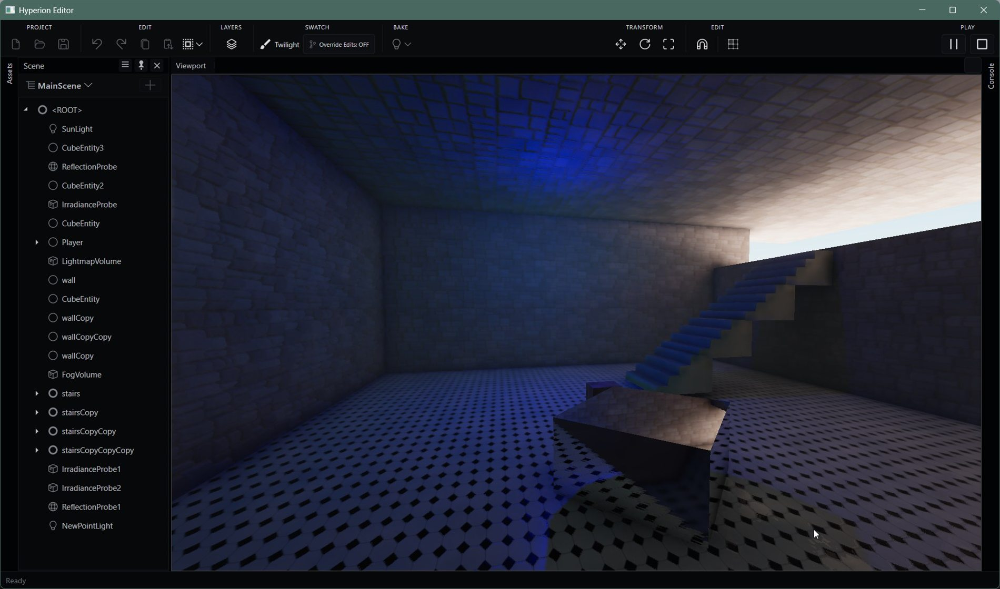
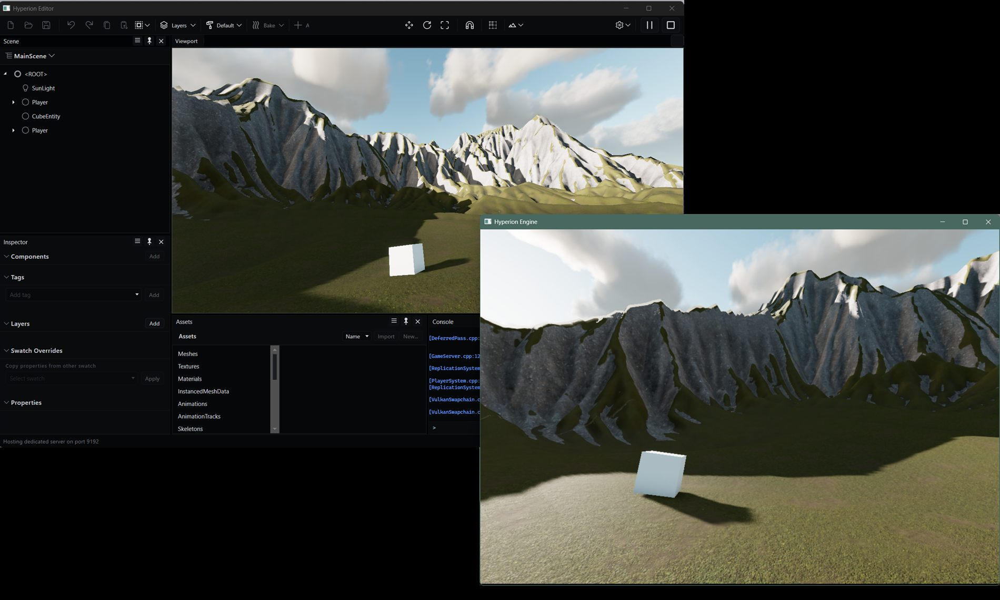

an open-source game engine that'll love you back
About the project
Hyperion started as a passion project in 2016, and is still worked on daily.
Our aim with Hyperion is to offer a high fidelity gaming experience even on low-end hardware using our in-house baking system to prepare as much of the lighting and effects as possible ahead of time.
That, and the editor shouldn't suck.
Features

-
Global illumination
Offline lightmap baker : bake lightmaps ahead of time, so games can look good on a potato
Screen-space : SSR, and HBAO are supported with and without baked lighting
Ray-traced : DDGI probes and reflections on RTX / RDNA hardware
-
GPU-driven rendering
Vulkan and DirectX 12 with clustered shading. Occlusion culling runs in compute and feeds indirect draws directly, including for GPU-simulated particles.

-
Multiplayer
Multiplayer is built in. The engine includes a dedicated server and clients connect to it.
-
Strata for scripts
Strata is a statically typed, compiled, LLVM-backed gameplay scripting language that recompiles live on save.
-
World streaming system
Scenes are assigned to cells that dynamically stream content in and out of the world.
-
Physics
Hyperion uses Jolt Physics for rigid bodies, and character controllers. Works over net.
Platforms
| Platform | Status |
|---|---|
| Windows | yes, runtime + editor |
| macOS | yes, runtime + editor |
| Android | supported - (not stable) |
| iOS | supported - (not stable) |
| Steam Deck | yes, with Proton - needs some work on input + resolution. |
| Linux | planned |
Building the Engine
Build steps live in the repository: Documentation/CompilingTheEngine.md.
Hyperion Engine is licensed under MIT.
Copyright The Hyperion Contributors.
Get Involved
We welcome contributors of all skill levels. If you find a bug, have an idea, or want to help contribute to the project, we'd love your support!